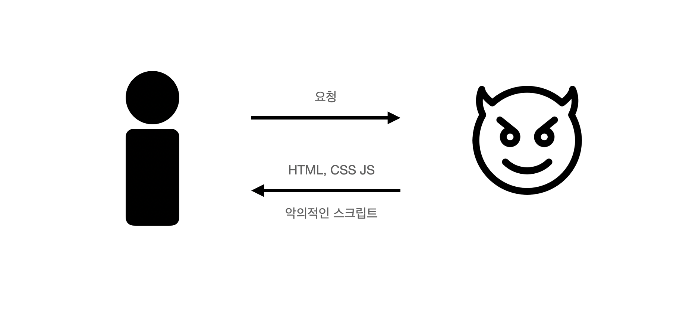
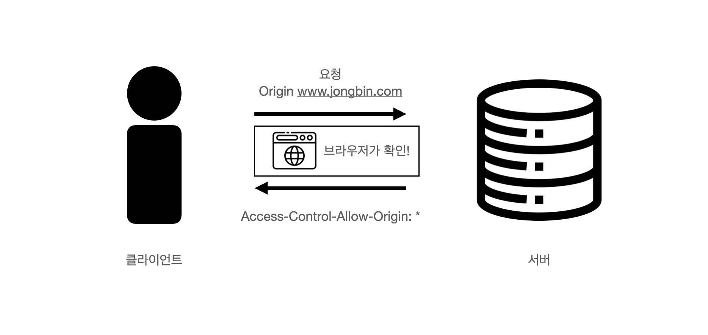

CORS
아직 나는 CORS에 의한 문제를 겪어 본적이 없다… 하지만 많은 초보개발자들이 이 CORS 때문에 머리를 쥐어뜯고는 한다고 들었다 이런점에서 내가 아직 열심히 하지 않아서 이런 문제를 겪어보지 못한 것이 아닐까? 라는 생각을 하면서 조금은 반성하게 되었다.
한 사이트에서 주소가 다른 서버로 요청을 보낼때 이 CORS에 의한 에러가 발생하게 된다. 하지만 신기하게도 같은 요청이더라도 어떤 부분에서는 되고 또 다른 부분에서는 안되는 경우가 있는데 이때 CORS로 요청을 막는 것은 브라우저의 영역이다.
왜냐면 우리의 브라우저는 우리들이 방문하는 사이트를 믿지 못하기 때문이다.
CORS(Cross-Origin Resource Sharing)
교차 출처 리소스 공유(Cross-Origin Resource Sharing, CORS)는 서버가 브라우저가 리소스 로드를 허용해야 하는 자체가 아닌 다른 출처 (도메인, 체계 또는 포트) 를 나타낼 수 있도록 하는 HTTP 헤더 기반 메커니즘입니다 . CORS는 또한 서버가 실제 요청을 허용하는지 확인하기 위해 브라우저가 교차 출처 리소스를 호스팅하는 서버에 “프리플라이트” 요청을 하는 메커니즘에 의존합니다. 해당 프리플라이트에서 브라우저는 HTTP 메서드를 나타내는 헤더와 실제 요청에 사용될 헤더를 보냅니다.
MDN에서는 위와 같이 CORS를 설명한다. 사실 이렇게 들어서는 아직 크게 무슨말인지 와닿지 않았다. 그래서 먼저 CORS가 왜 등장했는지부터 찾아보았다.
CORS의 등장

나의 브라우저에는 토큰등의 정보들이 쿠키의 형태로 저장이 되어있다. 만약 내가 악의적인 사이트에 접속했을때 악의적인 사이트에서는 나를 위해서 악의적인 사이트의 html, css, js 파일 등을 보내주고 내 브라우저는 나에게 보여주기 위해서 코드들을 파싱하고 토큰화하는 등 받은 코드들이 동작되도록 할텐데 이때 만약 자바스크립트로 브라우저에 저장된 내 정보를 빼내서 해당 사이트들로 접근해서 내 개인정보를 빼았을 수 있지 않을까?
하지만 다행히도 우리의 브라우저는 어떤 사이트에서 다른 사이트로 요청을 보내는 것을 기본적으로 막아준다.
하지만 웹 생태계가 점점 더 다양해지면서 여러 서비스들간에 보다 자유롭게 데이터를 주고 받을 필요가 생기게 되었는데 다른 사이트로 요청을 보내야 하기 때문에 이를 허용하도록 할 수 있는 CORS가 필요해지게 되었다.
SOP (Same Origin Policy)
CORS는 어떤 사이트에서 다른 사이트로 요청을 보내는 것을 허용하는 것이다. 반면 SOP은 동일 출처 정책으로서 같은 URL끼리만 API등의 데이터 접근이 가능하도록 하는 정책이다.

내가 다른 출처로 요청(Cross-Origin 요청)을 하게 되는 경우 브라우저에서는 요청에 origin이라고 Header에 추가해서 요청을 한다.
GET /HTTP/1.1
Host: www.jongbin.com
Origin: https://www.jongbin.com
이러한 요청을 받은 서버는 답장 헤더에 지정되어 있는 Access-Control-Allow-Origin 정보를 보낸다.
Access-Control-Allow-Origin: www.jongbin.com
Access-Control-Allow-Origin: *
이후 브라우저는 이 둘을 비교한다. origin에서 보낸 출처값이 서버의 답장 헤더에 있는 Access-Control-Allow-Origin에 존재한다면 안전한 요청이라고 판단하고 데이터를 건네주게 된다.
사용자 식별 정보가 담긴 요청을 하는 경우에는 더 엄격하게 이루어지는데 그 방식에는 두가지가 존재한다.
1. Simple request
보내는 측은 요청의 옵션으로 credentals 항목을 true로 해준다.
받는 측에서는 모든 사이트를 허용하는 와일드카드(*)의 사용을 자제하고 보내0는 측의 출처를 정확하게 명시해야 한다.
Simple request는 Http 메서드가 GET, POST, HEAD인 일정 조건에서 가능한 방식이다.
2. Preflight
PUT, DELETE 등 데이터를 조작하는 다른 요청들은 요청전에 Preflight 요청을 선행하는데 이는 해당 요청이 안전한지 확인하는 요청이다. Preflight 요청의 응답으로 허락이 떨어지면 그때서야 본 요청이 전송이 된다.
Simple request와 가장 큰 차이점은 Preflight은 요청을 하는데도 허락을 받아야 요청을 할 수 있다는 점이 있다.
결국 CORS는 다른 출처(웹사이트)간의 리소스(데이터) 공유가 가능하도록 한다. 요청을 받는 백엔드에서 허락할 다른 출처들을 명시(Access-Control-Allow-Origin)해두면 리소스 공유가 가능하도록 만들어진 메커니즘이다.